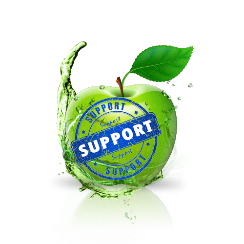

Fresh Group.
your perfect business

Our Support Page
User pages are pages in the User and User talk namespaces, and are useful for organizing and aiding the work users do on Wikipedia, and facilitating interaction and sharing between users. User pages are mainly for interpersonal discussion, notices, testing and drafts (see: Sandboxes), and, if desired, limited autobiographical and personal content.
SOCIAL PROFILS